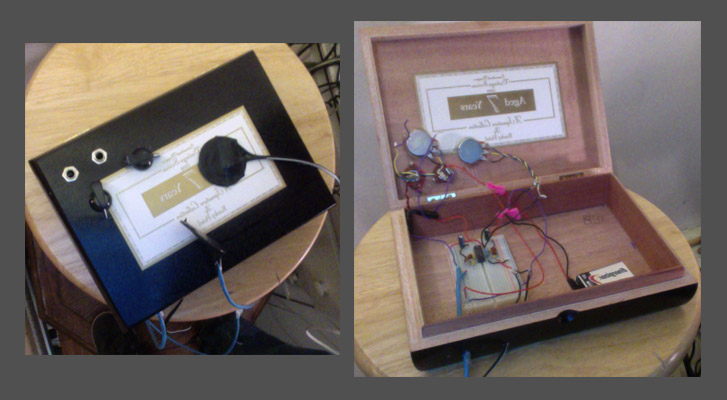

I spent the fall of my senior year having interesting conversations with an industrial designer, a sculptor, and a visiting professor of electronic music. Circumstance brought us together for an unlikely independent study on sound. We read, discussed, built, and performed with sound. Derek Bailey, a pioneer of Free Improvisation, once said, “it’s strange stuff, music, a lot of it is highly suspect.” Most participants in musical situations don’t question what is happening. I'm still not sure what happened in MUSC1970, but it was a lot of fun.
The best lessons I've learned from classes have often been the simplest ones. From my architecture and woodworking classes, I’ve learned that building things requires a combination of time, money, and skill. Putting more of any one of those three elements into a project will increase its quality. From my computer science classes, I’ve learned that creating a circuit or program is about organization, taking things one step at a time, and rereading the documentation until things make sense. From my music classes, I’ve learned to appreciate sound.
MUSC1970 reinforced all of the lessons listed above. Appropriately, the lesson best reinforced was my appreciation of sound. One of our first readings for the class was an excerpt by Christopher Smalls. This excerpt discussed the different perspectives with which African cultures approach music. Smalls shows that African cultures often don’t think of a piece of music as existing apart from its context. He outlines how early African cultures approached musical performances as ongoing “participatory events” rather than as discrete entities. Much like early African cultures, MUSC1970’s first classes were participatory musical events.
My two classmates and I each had a different idea of what MUSC1970 would be. Lucy Lie was interested in designing, building, and performing with a sophisticated analog instrument. Elio Icaza was interested in different ways of interfacing with musical circuitry. I was interested in creating a visual ‘instrument’ whose onstage presence would be similar to that of an ensemble member. I didn’t want the visual element’s presence to dominate other performance elements.
Despite these disparate starting points, the three of us quickly found common ground. We shared a mutual interest in building and amplifying interesting sounds. We spent our first classes learning the rudiments of musical circuitry, discussed sound and our approaches to it, and creating interesting noises. We spent time playing with Hex-Schmitt Triggers, placing contact microphones on strings and in fans, and plugging everything we possibly could into a mixer.
Through those first classes, I gained a greater appreciation for ambient sound. I spent much more time than I ever had previously listening to atonal, arrhythmic sounds. We discussed at length the timbre of different buzzes, beeps, and bloops. The sounds which we spent time with did have complex rhythmic and tonal qualities. They were sounds which are used as part of a developed aesthetic whose musical identity is very different from ambience. Still, the sounds which we studied shared one key characteristic with ambient sound: most people wouldn't consider them music.
Still, after amplifying various fans with contact mics, I can’t help but notice the differences in the sounds they create. Some fans sound much nicer than others. Fans make a humming noise that is distinctively musical. Fans often contain interesting polyrhythms. Fans are a genre unto themselves. Furthermore, fans are only one out of a number of underappreciated genres. Throughout the day, our sonic environment is constant and evolving. We very rarely experience complete silence. We are surrounded by ‘music’ only a small percentage of the day. All sound is made of the same basic elements. ‘Musical-ness’ is subjective. By learning to appreciate the musical qualities of every sound, we can always be hearing a song.
 Box 1: UV Sensitive Hex Schmitt Trigger Coupled to Distortion through Contact Mic
Besides the open ended explorations, our class also built a number of circuits. Each of these circuits made different types of sound and taught a different principle. We learned that just a handful of components and an empty breadboard provide an inexhaustible pool of sound. We made sequencing, oscillating, amplifying, and distorting circuits. By fusing these circuits together in different ways, each class member built a unique instrument.
The instrument I built, Box 1, combines two oscillators which modulate one another via diodes and an instable distortion circuit. The oscillators output to a small speaker. This speaker is amplified by a distorted contact microphone. The oscillators are controlled via a knob and the opening and closing of the box’s lid. The distortion is controlled by a single knob. One advantage of this decoupled design is that either the distortion or oscillators may be used in isolation. Another advantage is that the contact microphone captures the sound of the box’s changing resonance as the lid opens and closes.
Figure 1: The Elio-Lucy-Ben Trio performs at Granoff
Using our instruments, the three members of MUSC1970 performed a concert at the midpoint of the semester. This concert was an excuse to use the instruments which we had built. However, it also served as a chance for each class member to test the concepts that they had been thinking about. Lucy’s ideas were contained within her mixing desk and instrument. Elio experimented with the sensation of experiencing musical performance through the vibrations of balloons. Without being conscious of the formal concept, I experimented with performance ecology.
John Bowers, an authority on the matter, defines performance ecology as “a term used to describe complex interactions (between) performer, instrument, and environment.” After some reading, my own definition of performance ecology is “a performance mode utilizing a variety of source materials which are interacted with and combined in interesting ways.” My role in the MUSC1970 midterm performance consisted of playing snare drum, digital loops, Box 1, a fan, and my mixing desk. Many of these elements interacted with one another in complex ways during the performance. I think those interactions between performance elements are what make a performance definitively ‘ecological’.
There were a number of different things going on during our midterm performance. Audience members noted an “abundance of ideas.” However, this abundance led to “conceptual ambiguity arising from competing agendas.” The piece we performed had elements of good musical form. Nonetheless, the piece wasn’t cohesive. It was however, an act which Christopher Smalls would call musick.
Smalls suggests that musical happenings encompass something called musick. Smalls suggests that musick is composed of relationships. In his words, “It is in those relationships that the meaning of the act lies.” Those relationships can be aural, interpersonal, or conceptual. Viewing the MUSC1970 midterm concert as an interacting set of developing concepts may be the best way to understand it. Then again, we also produced a piece of music which speaks for itself. Smalls posits that there is no single correct way of understanding a performance. “There are only useful and useless answers… answers that lead in the direction of enrichment of experience or of its impoverishment.”
There is a list of some simple lessons I’ve learned which is included at the beginning of this essay. After MUSC1970, I have one new lesson to add to that list. When developing something, focus on the experience the intended audience will have. This lesson applies equally to building instruments, creating installations, or performing a piece of music. I learned this lesson from a critique Elio and Professor Ferguson gave me on one of my pieces, Sumi Ink Garden.
Figure 2: My attempt at Sumi Ink marbling juxtaposed with more skillful marbling
Halfway through the semester, I began developing ideas for a piece called Sumi Ink Garden. I decided that the piece could be achieved by using solenoid valves to dispense ink. I spent lots of time trying to figure out how the solenoid valves would function.
When I tried to explain what I had been working on to my classmates, I talked about the solenoid valves I had spent my time thinking about. Elio and Professor Ferguson asked pointed questions relating to the piece itself, as opposed to the technical hurdles involved in using electronic valves. Elio pointed out that I should focus on the experience of my piece. After that critique, it became obvious that a number of the piece’s elements were more important than the one which had held my focus. With my close-minded attitude, building Sumi Ink Garden had become a technical exercise.
Art and music are about experimenting with the materials and instruments available. However, there is almost always a number of means through which an aim can be achieved. Getting bogged down in achieving the aim through a particular mean is often unwise. The simplest solution is often the best. In order to realize complex concepts in an efficient manner, it is necessary to carefully consider the problem and ask others for their advice. After my critique and some thought, I discovered two much simpler methods of dispensing ink.
 Box 2: Relatively Stable Stereo Contact Mic Distortion Box
Box 2: Relatively Stable Stereo Contact Mic Distortion Box
I was thinking about another piece called Drum Correspondence during the same time that I was developing Sumi Ink Garden. The basic concept behind Drum Correspondence is to utilize contact microphones and audio analysis in order to generate imagery from drum attack signals. Drum Correspondence was the original idea through which I had developed the concept of an onstage ‘visual instrument.’
I developed Box 2 for Drum Correspondence. I had achieved some interesting sonorities by using Box 1’s distorted contact microphone on drums. However, Box 1’s distortion is very unpredictable. Box 2 was designed for stable distortion. Box 2 was also designed to keep signals from two drums separate, so that their amplitudes can be independently analyzed with software.
Ultimately, Sumi Ink Garden and Drum Correspondence were not fully realized. I developed simplistic versions of both these pieces, but they weren’t very visually compelling. I’ve learned that some sumi inks don’t float as well as others. In order to get the ink I procured to float, I had to add lots of photo-flo. Photo-flo is a surfactant (a chemical which causes liquids to disperse). In order to get the well-formed rings seen on the right of figure 2, localized application of ink and surfactant is necessary. A fine tipped calligraphy brush is much better suited for the job than the coarse brushes I used. Even without the ideal ink and brushes, I’ve still been able to achieve interesting results with sumi ink. Ink moves through water in unpredictable ways. Mixing ink and water is very similar to using Box 1’s distortion circuit. I never know exactly what will happen.
Unlike Sumi Ink Garden, the issues Drum Correspondence faced were purely technical. The system I developed for triggering interesting imagery with Box 2 was plagued by latency and some other issues, but I achieved proof of concept.
In his seminal work Music and Musicking, Christopher Smalls quotes Walter Benjamin. Benjamin said, “The supreme reality of art is the isolated, self-contained work.” Smalls disagrees strongly with this point, and so do I. The work developed in MUSC1970 was not developed in isolation, and was often not self-contained. My final project, Howl, is an example of this. Howl could be appreciated without context. However, it couldn’t be fully appreciated without context. The piece was created for a particular event. The piece was a story. The story was told through a spoken word narrative and accompanying music and visuals. The music and visuals were generated by a set of objects which each related to the story. The intended audience for the piece was Elio, Lucy, and Professor Ferguson. Each of these audience members already knew a lot about many of the objects which were used to tell the story. More importantly, the story’s script contains references to an installation we had discussed in class, as well as to one of the themes of our discussions: the value of considering experience.
The two unrealized pieces discussed previously both informed my final project. Howl used Box 2 to amplify rustling leaves, creating interesting atonal noise. I used sumi ink (applied by hand) in Howl in order to add visual interest to a relevant spoken word passage. That visual effect was a culminating moment for me. It was one of two dynamic visual components used in my final project. I see those visual effects as the realization of the ‘visual instrument’ idea I had envisioned at the beginning of the semester.
The courses through which I’ve developed as an artist have all fit into a certain mold. These classes have involved an opened ended creative outlet, interesting resources, and thought provoking group discussions. Sometimes when I take one of these classes I find a new way of expressing myself. For example, my Junior year in Stephan Moore’s studio composition seminar, I discovered that I was a singer-songwriter, with a twist. All my songs seldom repeated the same sound twice. In MUSC1970, I discovered that I was a performance ecologist. I like to sit on the ground and perform with objects that surround me. After developing my final piece, I learned that I was a performance ecologist who likes to use objects in order to tell a story.
I am a computer scientist, a storyteller, and play many instruments. I am a jack of all trades, but not a master of any one discipline. As someone with lots of breadth and not nearly as much depth, I suspect that the most worthwhile art I can make involves combining my skill-sets. I’m hopeful that I’ll be able to create some good art if I create more refined combinations of objects, story, images, and sound.
In his work Derek Bailey and The Story of Free Improvisation, Ben Watson discusses what Free Improvisation means to him, saying, “Real life happens now. You can find it if … (you) confront with sober senses the actual reality and aural possibilities of your own miserable life.” My life isn’t particularly miserable, but that quote does resonate with me. I think that Howl might represent the type of art through which I can best express my own perspective on reality and aural possibility.
Kurt Vonnegut once wrote a letter to a group of high schoolers, giving them advice about art. He said, “practice any art, no matter how well or badly, not to get money or fame, but to experience becoming, to find out what’s inside you.” There are many valid reasons for creating art, but I think the selfish reasons are often the best. MUSC1970’s midterm performance was a mish-mosh of each classmate’s individual agenda, performed for a few friends and our professor. My final performance was a story I wanted to tell, told to a few people I wanted to tell it to. Both of those performances were fundamentally self-referential works which summarized what was accomplished in MUSC1970. I believe that the greatest positive impact which art has is often how it changes the people who created it. That was almost certainly true of the art produced in MUSC1970.
My classmates and I did a lot of different things in MUSC1970. Each week’s class and homework was very different from the next. Likewise, our goals for the class changed a number of times. In light of all that change, it is surprising that we each accomplished our original aim. Lucy built a sophisticated analog instrument. Elio developed a novel way of interfacing with analog circuitry. I developed a few visual instruments whose presence didn’t dominate my final piece.
All of those goals were achieved within a complex and unexpected framework of concepts. Having heard Lucy’s previous work in a studio composition class, I can confidently say that her midterm performance for MUSC1970 was informed by class discussions. In particular, she embraced the “fantastic juxtapositions of varied tones and rhythms” which Luigi Russolo advocates in Art of Noises. Elio’s interface was deeply intertwined with ideas he developed about how the deaf perceive sound and how sound is perceived in medical situations. My visual instruments were used as part of an ecological performance. That type of performance is radically different than anything I’d done before MUSC1970.
The incidentally developed concepts were a more meaningful outcome of MUSC1970 than achieving our original goals. Much as Russolo encouraged a juxtaposition of tones and rhythms, MUSC1970 encouraged a juxtaposition of ideas. What Russolo said concerning noise applies equally well to the different perspectives brought to MUSC1970. “Noise… will achieve its most emotive power when inspiration is extracted from combined noises … cha-cha-cha-cha-chaak….ZANG-srrrr-TUMB-ZANG-TUMB-TUUMB.”
Works Cited
Bowers, John. Improvising Machines: Ethnographically Informed Design. EMS : Electroacoustic Music Studies Network – De Montfort/Leicester, 2007. Cox, Christoph, and Daniel Warner. Audio culture: readings in modern music. New York: Continuum, 2004. Russolo, Luigi. Wayback Machine, The Art of Noises. Accessed December 15, 2013. Web. Small, Chistopher. Music of the Common Tongue. Wesleyan University Press, 2011. Small, Christopher. Musicking: the meanings of performing and listening. Hanover: University Press of New England, 1998. Watson, Ben. Derek Bailey and the story of free improvisation. London New York: Verso, 2004.